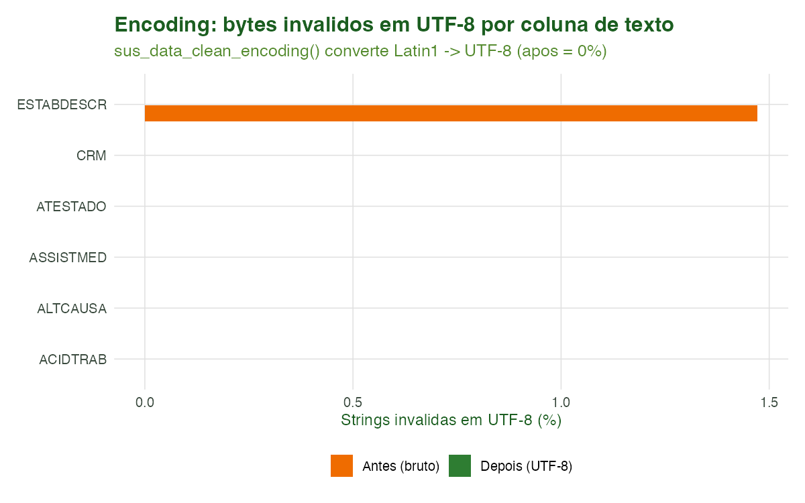
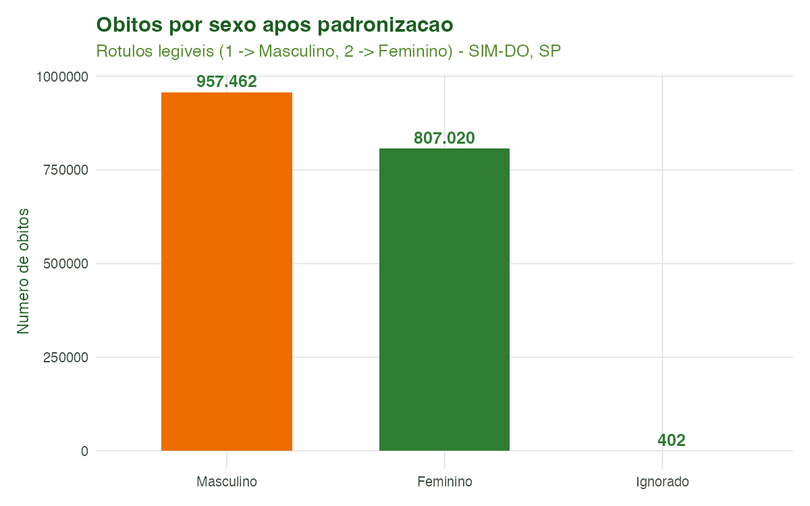

Tutorial 2: Encoding e Padronização
Equipe climasus4r
22/06/2026
Source:vignettes/02-encoding-padronizacao.Rmd
02-encoding-padronizacao.RmdObjetivo
Ao final deste tutorial você será capaz de deixar a base bruta do DATASUS pronta para análise, executando as duas funções da segunda etapa do pipeline:
-
sus_data_clean_encoding()— audita as colunas de texto e corrige problemas de codificação de caracteres (texto Latin1 lido como UTF-8, que transforma “São Paulo” em sequências ilegíveis); -
sus_data_standardize()— traduz os nomes das colunas para rótulos legíveis e decodifica os valores categóricos (por exemplo,SEXO = 1vira"Masculino",RACACOR = 4vira"Parda"), além de converter colunas de data para o tipoDate. Tudo isso de forma multilíngue ("pt","en","es").
Esta é a segunda etapa do pipeline
(import → clean → stand → …). Ela transforma uma tabela com
nomes crípticos e códigos numéricos numa tabela auditável, que os
tutoriais seguintes (filtragem, criação de variáveis, agregação)
conseguem manipular sem ambiguidade.
Contexto científico
Os microdados do DATASUS são distribuídos em arquivos
.dbc herdados de sistemas antigos, que gravam texto em
Latin1 (ISO-8859-1). Quando esses bytes são lidos como
UTF-8, acentos e cedilhas viram “mojibake” — caracteres
corrompidos que quebram junções por nome, agrupamentos e relatórios. O
pacote microdatasus (Saldanha, Bastos & Barcellos,
2019) já faz boa parte do pré-processamento, mas
sus_data_clean_encoding() atua como auditor
final, garantindo que toda coluna de texto seja UTF-8 válido
antes da análise.
Além do encoding, os campos do SIM, SIH, SINAN e demais sistemas
chegam com nomes abreviados (CAUSABAS,
CODMUNRES, DTOBITO) e categorias
codificadas em números (Brasil, Ministério da Saúde). Trabalhar
diretamente com esses códigos é frágil e propenso a erro. A padronização
para um vocabulário controlado e legível — e a
possibilidade de produzi-lo em três idiomas — é o que torna a análise
reprodutível e comunicável a leitores de diferentes países (princípio
FAIR de interoperabilidade; Wilkinson et al., 2016).
Caso condutor. Investigamos a temperatura e os desfechos de saúde em idosos (60+) na Região Metropolitana de São Paulo, 2014–2019. No Tutorial 1 montamos a base bruta multi-sistema (
caso_base_importado.rds). Aqui pegamos a base de óbitos (SIM-DO), corrigimos seu encoding e padronizamos nomes/categorias (sexo, raça/cor, CID, datas). O resultado é salvo emcaso_padronizado.rds, a entrada do Tutorial 3 (Filtragem).
Dados utilizados
| Objeto | Origem | Papel no caso |
|---|---|---|
caso_base_importado$obitos |
SIM-DO (Tutorial 1) | Base bruta a ser limpa e padronizada |
| Dicionário de tradução PT/EN/ES | R/utils-i18n.R |
Mapeia códigos → rótulos por sistema |
Recorte: estado de São Paulo, 2014–2019. Se o
.rds do Tutorial 1 ainda não existir, o script de geração
cai num exemplo mínimo (texto propositalmente em
Latin1) para que a etapa continue ilustrável offline.
Pipeline completo
Os blocos abaixo reproduzem o que o script
scripts/tutorial_02_encoding_padronizacao.R executa. Comece
carregando o pacote e a base do tutorial anterior:
library(climasus4r)
caso_base <- readRDS("vignettes-pt/dados/caso_base_importado.rds")
obitos_bruto <- caso_base$obitosPasso 1 — Corrigir o encoding
sus_data_clean_encoding() percorre todas as colunas de
texto, detecta as que contêm bytes UTF-8 inválidos e as
converte de Latin1 para UTF-8. As colunas numéricas e
de data são ignoradas.
obitos_utf8 <- sus_data_clean_encoding(
df = obitos_bruto,
backend = "tibble", # "arrow" (lazy, padrão) ou "tibble" (em memória)
lang = "pt", # idioma das mensagens: "pt", "en", "es"
verbose = TRUE # imprime quais colunas foram corrigidas
)Passo 2 — Padronizar nomes e categorias
sus_data_standardize() detecta automaticamente o
sistema (SIM, SIH, SINAN, …), traduz os nomes das colunas para
o vocabulário controlado e decodifica os valores categóricos no idioma
escolhido. Também converte as colunas de data (prefixo
data_ em português) para o tipo Date.
obitos_padr <- sus_data_standardize(
df = obitos_utf8,
lang = "pt", # "pt" / "en" / "es"
translate_columns = TRUE, # CAUSABAS -> causa_basica, SEXO -> sexo, ...
standardize_values = TRUE, # 1 -> Masculino; 4 -> Parda; ...
keep_original = FALSE, # TRUE mantém as colunas originais lado a lado
backend = "tibble",
verbose = TRUE
)Encadeando as duas funções
Como toda função da etapa recebe e devolve um
climasus_df, as duas se encadeiam naturalmente com o pipe —
exatamente a forma recomendada de uso:
obitos_padr <- obitos_bruto |>
sus_data_clean_encoding(backend = "tibble", lang = "pt") |>
sus_data_standardize(lang = "pt", backend = "tibble")Ao final, obitos_padr é a base limpa e
padronizada — com stage = "stand" nos metadados —
que salvamos para o próximo tutorial.
Características das funções
sus_data_clean_encoding()
Auditor final de codificação. Detecta colunas de texto com bytes UTF-8 inválidos e converte Latin1 → UTF-8.
| Argumento | Essencial? | Descrição |
|---|---|---|
df |
sim |
data.frame/tibble/climasus_df
(ou objeto Arrow coletável) |
backend |
opcional |
"arrow" (lazy, padrão) ou "tibble" (em
memória); com "arrow", recai para tibble se a avaliação
preguiçosa falhar |
lang |
opcional | Idioma das mensagens: "pt" (padrão), "en",
"es"
|
verbose |
opcional |
TRUE (padrão) imprime as colunas verificadas e
corrigidas |
Como funciona. Para cada coluna de texto, testa
stringi::stri_enc_isutf8() sobre os valores não nulos; se
qualquer valor for UTF-8 inválido, a coluna é
considerada “doente” e convertida inteira com
stringi::stri_conv(x, "latin1", "utf8"). No backend
"arrow", uma amostra de até 10.000 linhas é usada para
detectar quais colunas precisam de correção.
Retorno: um climasus_df com as colunas
de texto em UTF-8 válido, stage = "clean" e uma entrada de
histórico registrando a correção.
sus_data_standardize()
Traduz nomes de colunas e decodifica valores categóricos, com detecção automática do sistema DATASUS.
| Argumento | Essencial? | Descrição |
|---|---|---|
df |
sim | Saída de sus_data_import() /
sus_data_clean_encoding()
|
lang |
opcional | Idioma de nomes e rótulos: "pt"
(padrão), "en", "es"
|
translate_columns |
opcional |
TRUE (padrão) traduz os nomes das colunas |
standardize_values |
opcional |
TRUE (padrão) decodifica os valores categóricos |
keep_original |
opcional |
TRUE mantém as colunas originais junto das
traduzidas |
backend |
opcional |
"arrow" (lazy, padrão) ou "tibble" (em
memória) |
verbose |
opcional |
TRUE (padrão) imprime o relatório de padronização |
Etapas internas. (1) detecta o sistema
(detect_health_system() ou metadados); (2) traduz nomes de
colunas pelo dicionário do sistema/idioma; (3) decodifica valores
categóricos (ex.: SEXO, RACACOR,
LOCOCOR) para fatores legíveis; (4) converte colunas de
data para Date com formatos explícitos
(%Y-%m-%d, %Y%m%d, %d%m%Y), de
modo portátil entre sistemas operacionais.
Retorno: um climasus_df com
stage = "stand", system preenchido e nomes de
colunas únicos (make.unique()).
Detecção de encoding: a heurística
A regra de decisão de sus_data_clean_encoding() para
marcar uma coluna
como “a corrigir” pode ser escrita como:
ou seja, basta um valor com bytes UTF-8 inválidos para que toda a coluna seja convertida de Latin1 para UTF-8. Como diagnóstico, o script de geração mede a fração de strings inválidas por coluna, antes e depois:
onde é o número de valores não nulos da coluna. Após a correção, para toda coluna de texto.
Sistemas e dicionários suportados
sus_data_standardize() carrega um dicionário diferente
conforme o sistema detectado. Cada sistema tem dicionários nos três
idiomas (pt, en, es):
-
SIM —
get_translation_dict_{pt,en,es}() -
SIH —
get_translation_dict_{pt,en,es}_sih() -
SINAN —
get_translation_dict_{pt,en,es}_sinan() -
CNES —
get_translation_dict_{pt,en,es}_cnes() -
SINASC —
get_translation_dict_{pt,en,es}_sinasc() -
SIA (e subtipos AM, AQ, AR, AD, PS) —
get_translation_dict_*_sia*()
A tabela abaixo mostra uma amostra do dicionário PT do SIM usado para decodificar os valores categóricos do caso condutor (sexo, raça/cor e local de ocorrência do óbito):
| Variavel | Codigo | Rotulo |
|---|---|---|
| SEXO (sexo) | 1 | Masculino |
| SEXO (sexo) | 2 | Feminino |
| SEXO (sexo) | 0 | Ignorado |
| RACACOR (raca) | 1 | Branca |
| RACACOR (raca) | 2 | Preta |
| RACACOR (raca) | 3 | Amarela |
| RACACOR (raca) | 4 | Parda |
| RACACOR (raca) | 5 | Indigena |
| RACACOR (raca) | 9 | Ignorado |
| LOCOCOR (local_ocorrencia_obito) | 1 | Hospital |
| LOCOCOR (local_ocorrencia_obito) | 2 | Outro estabelecimento de saude |
| LOCOCOR (local_ocorrencia_obito) | 3 | Domicilio |
| LOCOCOR (local_ocorrencia_obito) | 4 | Via publica |
| LOCOCOR (local_ocorrencia_obito) | 5 | Outros |
| LOCOCOR (local_ocorrencia_obito) | 6 | Aldeia indigena |
| LOCOCOR (local_ocorrencia_obito) | 9 | Ignorado |
Resultados ilustrados

Figura 1. Diagnóstico de encoding antes e depois de
sus_data_clean_encoding(). Cada barra é a porcentagem de
strings com bytes UTF-8 inválidos numa coluna de texto. Após a conversão
Latin1 → UTF-8, a fração de inválidos cai a zero — sem qualquer
alteração no conteúdo legível.

Figura 2. Distribuição de óbitos por
sexo após a padronização. Os códigos numéricos do SIM
(1, 2) foram decodificados para rótulos
legíveis (Masculino, Feminino) por
sus_data_standardize(), prontos para uso em gráficos e
tabelas.
Figura 3. Distribuição de óbitos por
raça/cor após a padronização. Os códigos
(1–5, 9) foram traduzidos para
Branca, Preta, Amarela,
Parda, Indígena e Ignorado. Essa
decodificação é pré-requisito para análises de equidade em saúde nas
etapas seguintes.
| Indicador | Valor |
|---|---|
| Linhas | 4 |
| Colunas (bruto) | 8 |
| Colunas (padronizado) | 8 |
| Colunas de texto auditadas | 8 |
| Sistema detectado | SIM |
| Estagio (sus_meta$stage) | stand |
| Idioma de saida | pt |
Tabela 2. Resumo do antes/depois da etapa. O
stage dos metadados avança para stand,
sinalizando aos tutoriais seguintes que a base já está padronizada.
Referências
- Brasil. Ministério da Saúde. Manual de Instruções para o
preenchimento da Declaração de Óbito. Brasília: Ministério da
Saúde. (Define os códigos das variáveis do SIM, como
SEXO,RACACOReLOCOCOR.) - Saldanha, R. de F., Bastos, R. R., & Barcellos, C. (2019). Microdatasus: pacote para download e pré-processamento de microdados do Departamento de Informática do SUS (DATASUS). Cadernos de Saúde Pública, 35(9), e00032419.
- Wilkinson, M. D., et al. (2016). The FAIR Guiding Principles for scientific data management and stewardship. Scientific Data, 3, 160018.
Navegação
- Voltar ao hub de tutoriais
- Anterior: Tutorial 1 — Importação de Dados do DATASUS
- Próximo: Tutorial 3 — Filtragem (CID-10 e demografia)
```